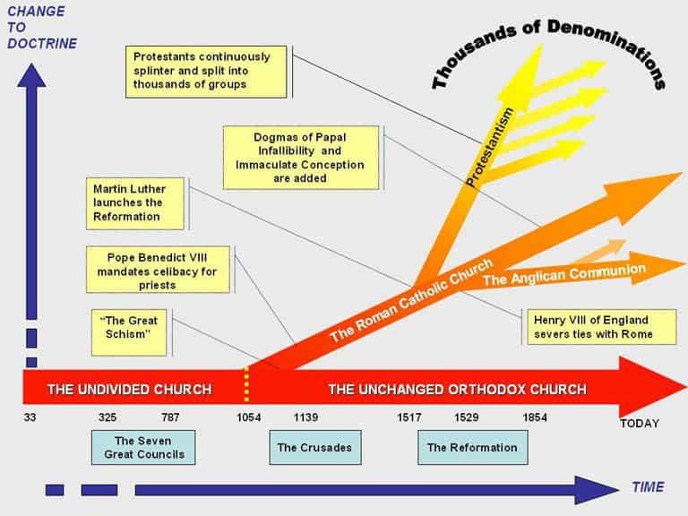
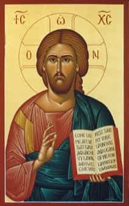
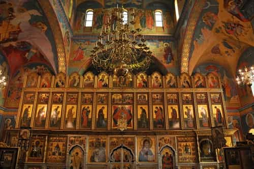
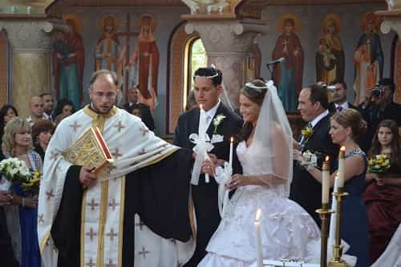

is an aspiring philosopher king, living the dream, travelling the world, hoarding FRNs and ignoring Americunts. He is a European at heart, lover of Latinas, and currently residing in the USA.


This week we conclude the series on conservative religions in America. Parts one and two are here.

Moscow Cathedral – Architecture matters!
While relatively unknown to mainstream Western Christians, the Orthodox Church (Greek for “right belief”) sees itself as the original, and most accurate Christian faith, following the teachings, practices, and beliefs of the original Christians from the time of Christ. While there are only 6 million followers in North America, worldwide, it is the second largest Christian group with over 225 million members. They believe that since the time of the religion’s founding, nothing has been added to their faith, and nothing can be added.

For the first thousand years, there was only one Christian church–the Orthodox church. The Catholic church is an offshoot of the Orthodox church, separating in the East-West Schism of 1054. Since that time, the Catholic Church evolved and modified teachings, adding ideas such as a Pope who is above all other men, and priests which are restricted from marrying, purgatory, indolences, predestination, crusades, and original sin. These are strictly Catholic ideas, and not Orthodox ones. From the Orthodox view, these are perversions of the faith of Christianity.
Russian President Putin receiving the blessing of the Church at his inauguration
The Protestant religions (Baptist, Methodist, Presbyterian, etc.) later split from the Catholic church in the 1500s, due to rebellion against these Catholic beliefs, which the Orthodox church did not follow. However, instead of returning to the original (orthodox) faith, new religions were created, which have further splintered Christianity.
This is primarily due to the fall of Constantinople in 1453, when the Byzantine Empire was defeated by the Ottoman empire, thus cutting off lines of communication between the Orthodox church and Western Europe. The church lost much power and influence, as well as priests to correspond with the west and reinvigorate an Orthodox movement. Without this support, Luther and his followers created new religions that they felt were better than the Catholic beliefs.
If one is a fan of history, then there is much to learn from the Orthodox beliefs, as indeed much of Western civilization was shaped by the ideas of Christianity, as practiced by the Orthodox faith (obviously the Catholic church played a huge role in Western civilization as well over the past 1000 years). If one follows the Christian faith, or is merely interested in this period of history, I strongly encourage at least a basic introduction to the ideas of Orthodoxy, if for no other reason than to understand your roots and history.

People are greatly influenced by what they contemplate (see: television and public degeneracy), and the Church, endeavoring to encourage its members to contemplate God, uses icons to visually proclaim what the Bible and Gospels proclaim in text. Icons often depict Jesus, saints or angels, typically in portrait style, and with symbols that encourage reflection on holiness and mystery.

Unlike some Protestant faiths which preach that you can simply make an acknowledgement that Jesus is the Son of God, and proceed as you were, knowing your position is secured in heaven, the Orthodox church requires moral behavior, and encourages one to live in a Christian manner. The church has major sacraments which include baptism, confession, marriage, holy orders, and anointing of the sick. There are periods of fasting, when one is expected to refrain from meat and dairy, followed by feasts, which celebrate important people or events in the church.
There are morning prayers (matins) and evening prayers (vespers) which a follower should observe. The celebration of sacraments is always led by an ordained clergyman, typically the local priest. The worship is focused around the Eucharist “thanksgiving,” also known as the Divine Liturgy, which originates from the celebration of the Last Supper.
The Eucharist is similar to, but more than, a mass or communion. This is a community event; one does not come and observe a sermon given by a priest as an isolated person; one comes to join his congregation in the celebration of the Eucharist through song, prayer, and experience with his church community.
Confession is the Sacrament through which sins are forgiven, and man’s relationship to God is restored and strengthened. The priest is seen as a spiritual father, guide, and counselor. In the event of serious sin, confession is a necessary preparation for Holy Communion.

I would like to witness an Orthodox marriage. The Sacrament of Marriage publicly joins a man as husband and wife, as they enter into a new relationship with each other, God, and the Church. Marriage is not viewed as a legal contract, and thus no vows are made. Neither is marriage a social institution, but an eternal Christian vocation that allows the husband and wife to grow closer to God. The question of gay marriage to an Orthodox isn’t even a possibility–regardless of whether they view a gay person as a sinner or just “born that way”, gay marriage simply does not exist and the Orthodox are not in the business of making up new rules.
Upon visiting a local Orthodox Church, I was immediately drawn to a young, feminine mother at the front door, who kindly welcomed me while holding her child. Upon entering, my senses were overwhelmed simultaneously with the smell of incense, the beautiful interiors of green and gold, and the angelic singing of the choir. The service is conducted mostly standing, and there are strict rules which are never going to be challenged, because the church has barely changed in almost 2,000 years and therefore has no reason to begin now. The male priest leads the service, which has not changed in its basic form since the time of Christ.
Patriarchy is extremely important to the Orthodox
Indeed, while the church was the most welcoming to visitors of any I attended in this series, it was clearly stated in print that
Communion is for those Orthodox who have fasted properly and been to Confession recently. Please try to introduce yourself to the Father ahead of time. Otherwise, be prepared to provide answers about your jurisdiction, your bishop and the last time you went to Confession. We do not offer communion to those outside the Orthodox Church. You are more than welcome to stay for the entire service, but we do ask to respect this most Blessed Gift.
The implication was clear—we don’t just take anyone. You are expected to put forth effort, presenting yourself a better man before God, and needless to say, the priest does not issue pussy passes.
The congregation was eager to meet a newcomer, and was especially interested in my name. I have a Christian name, and have never given it any thought before, but upon visiting, if you have a name such as Matthew or Christopher or Peter, expect several people to comment on it. Much of the congregation, while having no accent, came from Eastern European ancestry, and after the service there is an amazing spread of ethnic food provided by the congregants.
I enjoyed the service and people here the most, but my modern mind finds the old service boring and tedious. I did talk to a couple of guys my age that would probably make better friends than some of the hipster douches that I have known since high school. At least one grandmother is eager to set me up with her granddaughter, and has already given me a delicious recipe for borscht.
The Orthodox church is a conservative, pious, strict community, but its people are very kind and welcoming. They have an earnest desire to understand and live this “right belief”. It can be said that Catholics have added to the New Testament, through indulgences, purgatory, papal excesses, and a church hierarchy, and Protestants have subtracted from it, by ignoring good works and discipline. The Orthodox church remains much the same as it was 2,000 years ago, and if any Christian belief is to be held, it seems to me the truest and most honest.
The Orthodox faith, while requiring a belief in the supernatural that may be difficult for many to accept, is the faith that has driven Western civilization, and was the institution which established our ethical and moral framework during the period when the West prospered and grew more than anywhere else on the planet.
I believe that today, it is the belief system that is most congruent with opposing degeneracy, and living a stable, happy, fulfilling life. Until a better institution comes along (and one would do well to observe the pros and cons of each of these religions in creating a new moral institution), the Orthodox church provides a strong framework for a happy family, lead by a strong patriarch.
While I am out of range of the Amish, these are perhaps the three most common conservative religions in America. Each has the possibility of providing a high quality woman, and a set of rules for maintaining a strong, happy family. While I would strongly consider a woman from any of these faiths, the beliefs and practices of the Orthodox church, were most appealing to me. If you are considering marriage, or want to lead a more spiritual life, I strongly encourage visiting one of these groups. I also recommend interested readers to check out the writings of our resident theologian, Aurelius Moner.
Read More: ROK Undercover: What It Was Like To Spend A Day At A Mormon Church